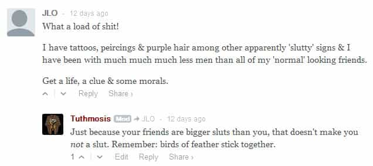

< < < Back
The 7 Most Common Feminist Insults – Return Of Kings
Slutty and overweight Internet feminists aren’t known for their originality or creativity.
This truism has been made especially clear in recent days, with the tandem explosion of two ROK events: my own 24 Signs She’s a Slut piece and ROK’s devastating, unexpected 9-11-for-fatties #FatShamingWeek campaign.
Both garnered tremendous engagement, and from disparate corners of the web. Much of it came from regular guys who—either recognizing the tell-tale signs of female promiscuity, or fed up with excuse-making from indolent fatties—high-fived us in enthusiastic approval and gratitude. However, a not-insignificant portion came from embittered feminists, crypto-sluts, fat tubs-of-shit, and their emasculated male defenders, who lobbed ad-hominem abuse at the authors. This, we know is the clarion call of the butt-hurt and fragile Internet feminist, who requires a “trigger warning” for mere words on a screen, while unironically declaring herself to be “strong” and “independent” in the same breath.
The fascinating part about these reams of “insults” wasn’t their sheer volume—and it was large—but how remarkably identical they were to every other insult you see coming from their ilk, in manosphere comment sections and twitter feeds, or feminists’ own call-out articles. Their lack of originality was such that you couldn’t help but wonder whether they were all reading from the same instruction manual or whether there’s, in fact, veracity in the argument that women are uncreative copycats with an inability to be funny.
1. Basement-Dwelling Losers
One way to feel better about someone attacking you is to hope and pray they’re unsuccessful, marginalized ciphers. This manifests itself in many forms, but usually with the inference that we live in our mother’s basements and play video games all day which, frankly, would be great—and doesn’t make our assertions wrong.

2. Sexless Virgin
Interestingly, one of the most common responses to my incontrovertible truths about slut detection was the unlikely proposition that I’m, in fact, a sexless virgin. This is among the most common feminist insults, proving that our skills at bedding women are, in the end, the object of their (however begrudging) admiration.
3. Small Dick
The classic feminist and fatty insult comes straight from the penis-envy sector of their brains. They rarely consider that perhaps all of the penises they’ve witnessed are “small” because: (1) their obese bodies make everything seem small by comparison; or (2) their unattractiveness rendered the unfortunate penis’s flaccidness that much more intense.

4. “Your [sic] a Rapist!!!”
When in doubt, shout rape. This (in its various permutations) is easily the most common insult, a sad product of the Rape Tourette’s epidemic among feminists and their white-knight protectors.

5. “Mommy Issues”
In a classic instance of “projection,” sluts and feminists with daddy issues assume everyone has their deep-seated psychological problems.
6. The Exception
“x doesn’t apply to me, therefore your whole proposition is wrong.” The rare exceptions merely prove the rule, sweetheart–assuming you’re even telling the truth.

7. Graphic Violence
The great irony is that people who are so dedicated to fighting violence against women are quick to wish (and describe) brutal violence on others. Perhaps unsurprisingly, they have a particular fixation on the male genitalia.
Ladies (and white-knights), next time you hope to hurt our feelings, frighten us, or get a laugh at our expense, review this list and come up with something new. Unlike you, we can actually appreciate a well-placed insult.
 If you like this article and are concerned about the future of the Western world, check out Roosh's book Free Speech Isn't Free. It gives an inside look to how the globalist establishment is attempting to marginalize masculine men with a leftist agenda that promotes censorship, feminism, and sterility. It also shares key knowledge and tools that you can use to defend yourself against social justice attacks. Click here to learn more about the book. Your support will help maintain our operation.
If you like this article and are concerned about the future of the Western world, check out Roosh's book Free Speech Isn't Free. It gives an inside look to how the globalist establishment is attempting to marginalize masculine men with a leftist agenda that promotes censorship, feminism, and sterility. It also shares key knowledge and tools that you can use to defend yourself against social justice attacks. Click here to learn more about the book. Your support will help maintain our operation.
Read More: You-Go-Girlism Is More Toxic Than Feminism


{kind=link}
{kind=link}
{kind=link}
{kind=link}
{kind=link}
{kind=link}
{kind=link}
{kind=link}
{kind=link}
{kind=link}
{kind=link}
{kind=link}
{kind=link}
{kind=link}
{kind=link}
{kind=link}